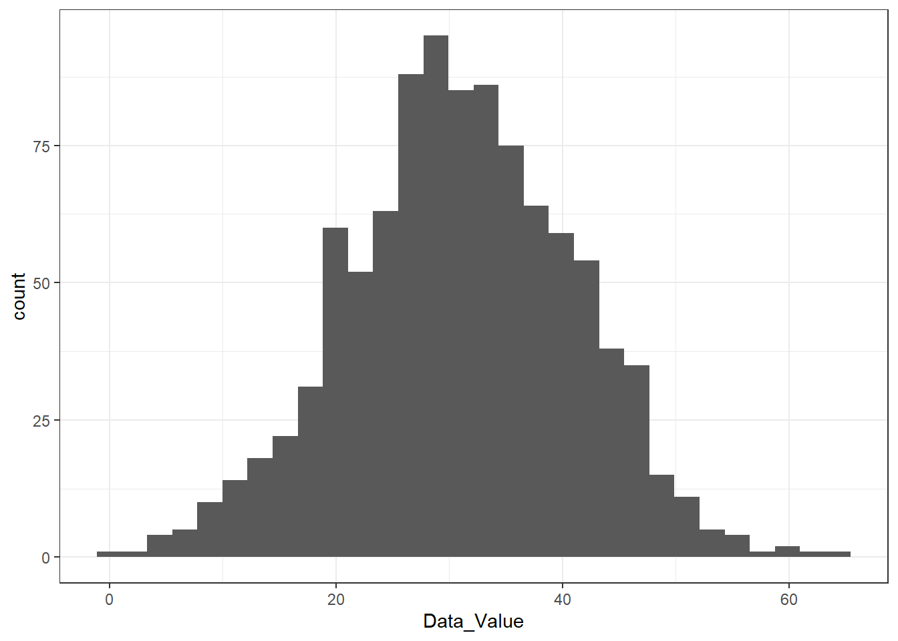

When I first downloaded my data in, the size of the file was 33 MB large. R was unable to load the file so I decided to import the data. After importing the data, I wrote the code beloww to reduce the size of the to 1000 observations. I created the reduced set name (reduced_data) and cleaned the data with the following code.
#This chunk only works in the R terminal as I cannot figure out how it will work within the qmd file.
library(readr)library(dplyr)
Attaching package: 'dplyr'
The following objects are masked from 'package:stats':
filter, lag
The following objects are masked from 'package:base':
intersect, setdiff, setequal, union
── Column specification ────────────────────────────────────────────────────────
Delimiter: ","
chr (25): LocationAbbr, LocationDesc, Datasource, Class, Topic, Question, Da...
dbl (7): YearStart, YearEnd, Data_Value, Data_Value_Alt, Low_Confidence_Lim...
lgl (1): Data_Value_Unit
ℹ Use `spec()` to retrieve the full column specification for this data.
ℹ Specify the column types or set `show_col_types = FALSE` to quiet this message.
# Define the desired number of rows to include in the reduced datasetdesired_rows <-1000# Adjust this number as needed# Select a random subset of rowsreduced_data <- original_data %>%sample_n(desired_rows)# Write the reduced dataset to a new CSV filewrite_csv(reduced_data, "Nutrition__Physical_Activity__and_Obesity_-_Behavioral_Risk_Factor_Surveillance_System_20240207.csv")# Retrieve the full column specificationcolumn_spec <-spec(reduced_data)column_spec
I, then, created code to clean the data removing misssing values and changing them to NA.
library(readr)library(dplyr)# Display the structure of the datastr(reduced_data)
spc_tbl_ [1,000 × 33] (S3: spec_tbl_df/tbl_df/tbl/data.frame)
$ YearStart : num [1:1000] 2019 2011 2020 2014 2019 ...
$ YearEnd : num [1:1000] 2019 2011 2020 2014 2019 ...
$ LocationAbbr : chr [1:1000] "GA" "MT" "HI" "TX" ...
$ LocationDesc : chr [1:1000] "Georgia" "Montana" "Hawaii" "Texas" ...
$ Datasource : chr [1:1000] "Behavioral Risk Factor Surveillance System" "Behavioral Risk Factor Surveillance System" "Behavioral Risk Factor Surveillance System" "Behavioral Risk Factor Surveillance System" ...
$ Class : chr [1:1000] "Physical Activity" "Physical Activity" "Obesity / Weight Status" "Obesity / Weight Status" ...
$ Topic : chr [1:1000] "Physical Activity - Behavior" "Physical Activity - Behavior" "Obesity / Weight Status" "Obesity / Weight Status" ...
$ Question : chr [1:1000] "Percent of adults who engage in no leisure-time physical activity" "Percent of adults who achieve at least 150 minutes a week of moderate-intensity aerobic physical activity or 75"| __truncated__ "Percent of adults aged 18 years and older who have obesity" "Percent of adults aged 18 years and older who have obesity" ...
$ Data_Value_Unit : logi [1:1000] NA NA NA NA NA NA ...
$ Data_Value_Type : chr [1:1000] "Value" "Value" "Value" "Value" ...
$ Data_Value : num [1:1000] 32.6 23.4 21.3 7.8 30.8 41.3 34 34.4 31.4 34.1 ...
$ Data_Value_Alt : num [1:1000] 32.6 23.4 21.3 7.8 30.8 41.3 34 34.4 31.4 34.1 ...
$ Data_Value_Footnote_Symbol: chr [1:1000] NA NA NA NA ...
$ Data_Value_Footnote : chr [1:1000] NA NA NA NA ...
$ Low_Confidence_Limit : num [1:1000] 15.6 21 17.3 4.4 24.4 38.8 29.2 31.2 26.7 29.8 ...
$ High_Confidence_Limit : num [1:1000] 55.8 26 26 13.5 38.1 43.8 39.2 37.7 36.6 38.6 ...
$ Sample_Size : num [1:1000] 51 2773 604 275 513 ...
$ Total : chr [1:1000] NA NA NA NA ...
$ Age(years) : chr [1:1000] NA NA NA NA ...
$ Education : chr [1:1000] NA "Some college or technical school" NA NA ...
$ Gender : chr [1:1000] NA NA NA NA ...
$ Income : chr [1:1000] NA NA "$25,000 - $34,999" NA ...
$ Race/Ethnicity : chr [1:1000] "American Indian/Alaska Native" NA NA "Asian" ...
$ GeoLocation : chr [1:1000] "(32.83968109300048, -83.62758034599966)" "(47.066528972, -109.424420645)" "(21.304850435000446, -157.85774940299973)" "(31.827240407, -99.426770206)" ...
$ ClassID : chr [1:1000] "PA" "PA" "OWS" "OWS" ...
$ TopicID : chr [1:1000] "PA1" "PA1" "OWS1" "OWS1" ...
$ QuestionID : chr [1:1000] "Q047" "Q044" "Q036" "Q036" ...
$ DataValueTypeID : chr [1:1000] "VALUE" "VALUE" "VALUE" "VALUE" ...
$ LocationID : chr [1:1000] "13" "30" "15" "48" ...
$ StratificationCategory1 : chr [1:1000] "Race/Ethnicity" "Education" "Income" "Race/Ethnicity" ...
$ Stratification1 : chr [1:1000] "American Indian/Alaska Native" "Some college or technical school" "$25,000 - $34,999" "Asian" ...
$ StratificationCategoryId1 : chr [1:1000] "RACE" "EDU" "INC" "RACE" ...
$ StratificationID1 : chr [1:1000] "RACENAA" "EDUCOTEC" "INC2535" "RACEASN" ...
- attr(*, "spec")=
.. cols(
.. YearStart = col_double(),
.. YearEnd = col_double(),
.. LocationAbbr = col_character(),
.. LocationDesc = col_character(),
.. Datasource = col_character(),
.. Class = col_character(),
.. Topic = col_character(),
.. Question = col_character(),
.. Data_Value_Unit = col_logical(),
.. Data_Value_Type = col_character(),
.. Data_Value = col_double(),
.. Data_Value_Alt = col_double(),
.. Data_Value_Footnote_Symbol = col_character(),
.. Data_Value_Footnote = col_character(),
.. Low_Confidence_Limit = col_double(),
.. High_Confidence_Limit = col_double(),
.. Sample_Size = col_double(),
.. Total = col_character(),
.. `Age(years)` = col_character(),
.. Education = col_character(),
.. Gender = col_character(),
.. Income = col_character(),
.. `Race/Ethnicity` = col_character(),
.. GeoLocation = col_character(),
.. ClassID = col_character(),
.. TopicID = col_character(),
.. QuestionID = col_character(),
.. DataValueTypeID = col_character(),
.. LocationID = col_character(),
.. StratificationCategory1 = col_character(),
.. Stratification1 = col_character(),
.. StratificationCategoryId1 = col_character(),
.. StratificationID1 = col_character()
.. )
- attr(*, "problems")=<externalptr>
# Check for missing valuesmissing_values <-sum(is.na(reduced_data))cat("Number of missing values in the dataset:", missing_values, "\n")
Number of missing values in the dataset: 8310
# Replace missing values (if coded as 999) with NAreduced_data <- reduced_data %>%mutate_all(~ifelse(. ==999, NA, .))
In order to view only a few variables in the data out of the 33 available, I decided that Class, Question, the data value attached to the question, education income and race/ethnicity were pertinent variables. Geographical location was kept as a separate viariable to analyze.
# Select a few variables for analysis (e.g., first 5 variables)selected_variables <- reduced_data %>%select(LocationDesc, Class, Question, Data_Value, Education, Income, `Race/Ethnicity`)# Display summary statistics for selected variablessummary(selected_variables)
LocationDesc Class Question Data_Value
Length:1000 Length:1000 Length:1000 Min. : 4.60
Class :character Class :character Class :character 1st Qu.:24.12
Mode :character Mode :character Mode :character Median :30.80
Mean :31.02
3rd Qu.:36.48
Max. :66.40
NA's :98
Education Income Race/Ethnicity
Length:1000 Length:1000 Length:1000
Class :character Class :character Class :character
Mode :character Mode :character Mode :character
To explore the data further, I ran code to assess the distribution of categorical variables below.
Here, I created a plot to show the ditribution of data by physical activity class and filtered out the question “Percent engaging in no leisure-time physical activity” to look at the distibution of data within this class and question.
library(dplyr)physical_activity_data <- reduced_data %>%filter(Class =="Physical Activity")physical_activity_no_leisure_data <- reduced_data %>%filter(Class =="Physical Activity"& Question =="Percent of adults who engage in no leisure-time physical activity")library(ggplot2)# Summary table for categorical variablescategorical_summary <- physical_activity_no_leisure_data %>%summarise(across(c(LocationDesc, Education, Income, `Race/Ethnicity`), ~round(mean(.)*100, 2))) %>%rename(LocationDesc_Percentage = LocationDesc,Education_Percentage = Education,Income_Percentage = Income,Race_Ethnicity_Percentage =`Race/Ethnicity`)
Warning: There were 4 warnings in `summarise()`.
The first warning was:
ℹ In argument: `across(...)`.
Caused by warning in `mean.default()`:
! argument is not numeric or logical: returning NA
ℹ Run `dplyr::last_dplyr_warnings()` to see the 3 remaining warnings.
print("Summary of Categorical Variables:")
[1] "Summary of Categorical Variables:"
print(categorical_summary)
# A tibble: 1 × 4
LocationDesc_Percentage Education_Percentage Income_Percentage
<dbl> <dbl> <dbl>
1 NA NA NA
# ℹ 1 more variable: Race_Ethnicity_Percentage <dbl>
# Histogram and summary statistics for the continuous variable Data_Valueggplot(physical_activity_no_leisure_data, aes(x = Data_Value)) +geom_histogram(binwidth =5, fill ="skyblue", color ="black", alpha =0.7) +labs(title ="Distribution of Percentages of Adults\nEngaging in No Leisure-Time Physical Activity",x ="Percentage of Adults",y ="Frequency") +theme_minimal()
── Attaching core tidyverse packages ──────────────────────── tidyverse 2.0.0 ──
✔ forcats 1.0.0 ✔ stringr 1.5.1
✔ lubridate 1.9.3 ✔ tibble 3.2.1
✔ purrr 1.0.2 ✔ tidyr 1.3.0
── Conflicts ────────────────────────────────────────── tidyverse_conflicts() ──
✖ dplyr::filter() masks stats::filter()
✖ dplyr::lag() masks stats::lag()
ℹ Use the conflicted package (<http://conflicted.r-lib.org/>) to force all conflicts to become errors
library(purrr)library(gtsummary)
I am assuming that the cleaned dataset is listed as selected_variables. The summaries of all the variables (except the Data_Value variable) were not clear, since there were a lot of NAs, so I decided to produce a summary of the unclear variables. This part summarizes all the values from each categorical variable.
#List all the values of the `Location_Desc` variable, using `unique()` and list them ascending using `sort()`unique(selected_variables$LocationDesc) %>%sort()
#List all the values of the `Question` variable, using `unique()` and list them ascending using `sort()`unique(selected_variables$Question) %>%sort()
[1] "Percent of adults aged 18 years and older who have an overweight classification"
[2] "Percent of adults aged 18 years and older who have obesity"
[3] "Percent of adults who achieve at least 150 minutes a week of moderate-intensity aerobic physical activity or 75 minutes a week of vigorous-intensity aerobic activity (or an equivalent combination)"
[4] "Percent of adults who achieve at least 150 minutes a week of moderate-intensity aerobic physical activity or 75 minutes a week of vigorous-intensity aerobic physical activity and engage in muscle-strengthening activities on 2 or more days a week"
[5] "Percent of adults who achieve at least 300 minutes a week of moderate-intensity aerobic physical activity or 150 minutes a week of vigorous-intensity aerobic activity (or an equivalent combination)"
[6] "Percent of adults who engage in muscle-strengthening activities on 2 or more days a week"
[7] "Percent of adults who engage in no leisure-time physical activity"
[8] "Percent of adults who report consuming fruit less than one time daily"
[9] "Percent of adults who report consuming vegetables less than one time daily"
#List all the values of the `Education` variable, using `unique()` and list them ascending using `sort()`unique(selected_variables$Education) %>%sort()
[1] "College graduate" "High school graduate"
[3] "Less than high school" "Some college or technical school"
#List all the values of the `Income` variable, using `unique()` and list them ascending using `sort()`unique(selected_variables$Income) %>%sort()
[1] "$15,000 - $24,999" "$25,000 - $34,999" "$35,000 - $49,999"
[4] "$50,000 - $74,999" "$75,000 or greater" "Data not reported"
[7] "Less than $15,000"
#List all the values of the `Race/Ethnicity` variable, using `unique()` and list them ascending using `sort()`unique(selected_variables$`Race/Ethnicity`) %>%sort()
[1] "2 or more races" "American Indian/Alaska Native"
[3] "Asian" "Hawaiian/Pacific Islander"
[5] "Hispanic" "Non-Hispanic Black"
[7] "Non-Hispanic White" "Other"
Now, estimating the percent of each value per each variable, using the table() and prop.table() functions.
Percent of adults aged 18 years and older who have an overweight classification
19.2
Percent of adults aged 18 years and older who have obesity
17.3
Percent of adults who achieve at least 150 minutes a week of moderate-intensity aerobic physical activity or 75 minutes a week of vigorous-intensity aerobic activity (or an equivalent combination)
8.4
Percent of adults who achieve at least 150 minutes a week of moderate-intensity aerobic physical activity or 75 minutes a week of vigorous-intensity aerobic physical activity and engage in muscle-strengthening activities on 2 or more days a week
9.6
Percent of adults who achieve at least 300 minutes a week of moderate-intensity aerobic physical activity or 150 minutes a week of vigorous-intensity aerobic activity (or an equivalent combination)
8.9
Percent of adults who engage in muscle-strengthening activities on 2 or more days a week
8.8
Percent of adults who engage in no leisure-time physical activity
18.9
Percent of adults who report consuming fruit less than one time daily
3.5
Percent of adults who report consuming vegetables less than one time daily
5.4
2 or more races American Indian/Alaska Native
15.30612 12.92517
Asian Hawaiian/Pacific Islander
11.90476 13.26531
Hispanic Non-Hispanic Black
11.56463 12.24490
Non-Hispanic White Other
11.90476 10.88435
First, I set a seed for reproducibility and then I defined the number of observations for this dataset
set.seed(123)#Defined 60 as the number of observations (n=60 wildland firefighters)n_behavior <-1000
Here, creating the empty data frame behavior_data with the seven previously explored variables.
And here I fill each variable with their respective values
#`Location_Desc`: First I created a list from all unique locations seen above.unique_location <-unique(selected_variables$LocationDesc)unique_location_list <-as.list(unique_location)#And then estimating the probability for each valueprob_location <-1/length(unique_location_list)#Then I created the variable, estimating the probability for each location to be similar for each locationbehavior_data$Location_Desc <-map_chr(sample(unique_location_list, n_behavior, replace = T, prob =rep(prob_location, length(unique_location_list))), as.character)#`Class`:behavior_data$Class <-map_chr(sample(c("Fruits and Vegetables", "Obesity/Weight Status", "Physical Activity"), n_behavior, replace = T, prob =c(0.09, 0.36, 0.55)), as.character)#`Question`: For this variable I also used the same steps from the `Location_Des` variableunique_question <-unique(selected_variables$Question)unique_question_list <-as.list(unique_question)prob_question <-1/length(unique_question_list)behavior_data$Question <-map_chr(sample(unique_question_list, n_behavior, replace = T, prob =rep(prob_question, length(unique_question_list))), as.character)#`Data_Value`: Setting the mean and SD.behavior_data$Data_Value <-round(rnorm(n_behavior, mean =31.0163, sd =10.15591), 1)#`Education`: Reflecting the approximate percent for each valuebehavior_data$Education <-map_chr(sample(c("College graduate", "High school graduate", "Less than high school", "Some college or technical school"), n_behavior, replace = T, prob =c(0.30, 0.21, 0.25, 0.24)), as.character)#`Income`: Reflecting the approximate percent for each valuebehavior_data$Income <-map_chr(sample(c("$15,000 - $24,999", "$25,000 - $34,999", "$35,000 - $49,999", "$50,000 - $74,999", "$75,000 or greater", "Data not reported", "Less than $15,000"), n_behavior, replace = T, prob =c(0.13, 0.15, 0.15, 0.13, 0.13, 0.14, 0.17)), as.character)#`Race/Ethnicity`: Also reflecting the most accurate probabilities for each valuebehavior_data$Race.Ethnicity <-map_chr(sample(c("2 or more races", "American Indian/Alaska Native", "Asian", "Hawaiian/Pacific Islander", "Hispanic", "Non-Hispanic Black", "Non-Hispanic White", "Other"), n_behavior, replace = T, prob =c(0.15, 0.13, 0.12, 0.13, 0.12, 0.12, 0.12, 0.11)), as.character)
The dataframe is ready to do the summarization/exploration.
Data exploration/summarization
First I summarized the Data_Value variable using a barplot to observe where the average values are located. Then, producinga a summary of the mean, median, min, max and the IQR.
#Using `ggplot()` and `geom_histogram()` to plot the values of `Data_Value`ggplot(behavior_data, aes(x= Data_Value))+geom_histogram()+theme_bw()
`stat_bin()` using `bins = 30`. Pick better value with `binwidth`.

#Produce a summary of the new dataframe using the `summary()` functionsummary(behavior_data$Data_Value)
Min. 1st Qu. Median Mean 3rd Qu. Max.
0.10 24.40 30.70 30.99 37.90 64.40
Based on the plot and the summary, it looks like this variable was correctly recreated. However, there are some missing values from the original dataset and these were not considered.
Now I produced a table that summarizes the other 6 categorical variables.
#Using the `tbl_summary()` function to produce a frequency summary of the 6 categorical variables from the cleaned datasetcat_summary <- behavior_data %>%select(Location_Desc, Class, Question, Education, Income, Race.Ethnicity) %>%tbl_summary() %>%bold_labels()cat_summary
Characteristic
N = 1,0001
Location_Desc
Alabama
25 (2.5%)
Alaska
16 (1.6%)
Arizona
13 (1.3%)
Arkansas
20 (2.0%)
California
15 (1.5%)
Colorado
18 (1.8%)
Connecticut
20 (2.0%)
Delaware
13 (1.3%)
District of Columbia
25 (2.5%)
Florida
17 (1.7%)
Georgia
19 (1.9%)
Guam
20 (2.0%)
Hawaii
15 (1.5%)
Idaho
19 (1.9%)
Illinois
18 (1.8%)
Indiana
26 (2.6%)
Iowa
19 (1.9%)
Kansas
16 (1.6%)
Kentucky
12 (1.2%)
Louisiana
16 (1.6%)
Maine
20 (2.0%)
Maryland
24 (2.4%)
Massachusetts
21 (2.1%)
Michigan
12 (1.2%)
Minnesota
23 (2.3%)
Mississippi
19 (1.9%)
Missouri
21 (2.1%)
Montana
17 (1.7%)
National
22 (2.2%)
Nebraska
18 (1.8%)
Nevada
15 (1.5%)
New Hampshire
15 (1.5%)
New Jersey
21 (2.1%)
New Mexico
17 (1.7%)
New York
10 (1.0%)
North Carolina
21 (2.1%)
North Dakota
17 (1.7%)
Ohio
14 (1.4%)
Oklahoma
18 (1.8%)
Oregon
25 (2.5%)
Pennsylvania
16 (1.6%)
Puerto Rico
20 (2.0%)
Rhode Island
10 (1.0%)
South Carolina
18 (1.8%)
South Dakota
16 (1.6%)
Tennessee
23 (2.3%)
Texas
23 (2.3%)
Utah
22 (2.2%)
Vermont
21 (2.1%)
Virgin Islands
18 (1.8%)
Virginia
17 (1.7%)
Washington
19 (1.9%)
West Virginia
10 (1.0%)
Wisconsin
19 (1.9%)
Wyoming
16 (1.6%)
Class
Fruits and Vegetables
83 (8.3%)
Obesity/Weight Status
367 (37%)
Physical Activity
550 (55%)
Question
Percent of adults aged 18 years and older who have an overweight classification
99 (9.9%)
Percent of adults aged 18 years and older who have obesity
125 (13%)
Percent of adults who achieve at least 150 minutes a week of moderate-intensity aerobic physical activity or 75 minutes a week of vigorous-intensity aerobic activity (or an equivalent combination)
105 (11%)
Percent of adults who achieve at least 150 minutes a week of moderate-intensity aerobic physical activity or 75 minutes a week of vigorous-intensity aerobic physical activity and engage in muscle-strengthening activities on 2 or more days a week
114 (11%)
Percent of adults who achieve at least 300 minutes a week of moderate-intensity aerobic physical activity or 150 minutes a week of vigorous-intensity aerobic activity (or an equivalent combination)
113 (11%)
Percent of adults who engage in muscle-strengthening activities on 2 or more days a week
98 (9.8%)
Percent of adults who engage in no leisure-time physical activity
115 (12%)
Percent of adults who report consuming fruit less than one time daily
123 (12%)
Percent of adults who report consuming vegetables less than one time daily
108 (11%)
Education
College graduate
287 (29%)
High school graduate
221 (22%)
Less than high school
277 (28%)
Some college or technical school
215 (22%)
Income
$15,000 - $24,999
116 (12%)
$25,000 - $34,999
170 (17%)
$35,000 - $49,999
150 (15%)
$50,000 - $74,999
128 (13%)
$75,000 or greater
136 (14%)
Data not reported
138 (14%)
Less than $15,000
162 (16%)
Race.Ethnicity
2 or more races
145 (15%)
American Indian/Alaska Native
130 (13%)
Asian
121 (12%)
Hawaiian/Pacific Islander
137 (14%)
Hispanic
113 (11%)
Non-Hispanic Black
119 (12%)
Non-Hispanic White
126 (13%)
Other
109 (11%)
1 n (%)
Based on the table above it is seen that the percentage for each value for each category is what it was expected.
Although the synthetic data (behavior_data) is very similar to the original selected_variables dataset, it is missing the NA values. Another line of code would be necessary to include the percentage of NAs in the Data_Value, Education, Income and Race.Ethnicity variables.